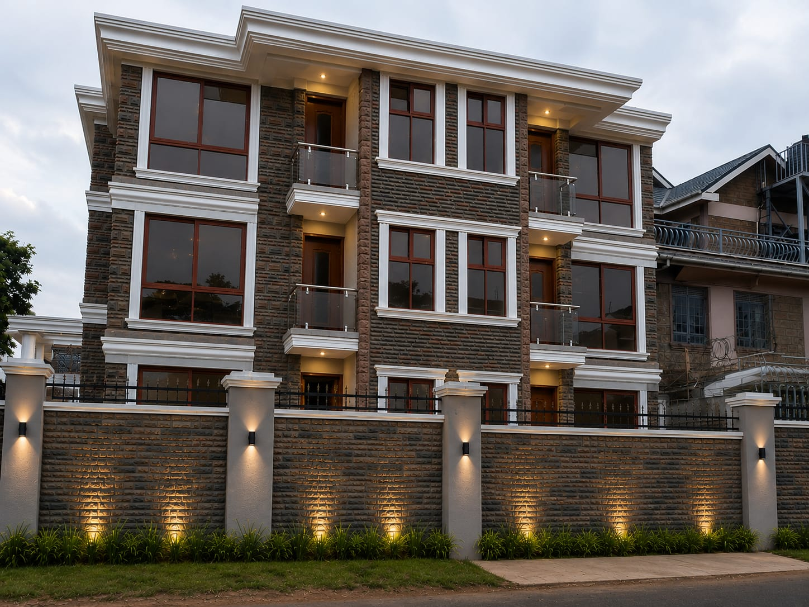
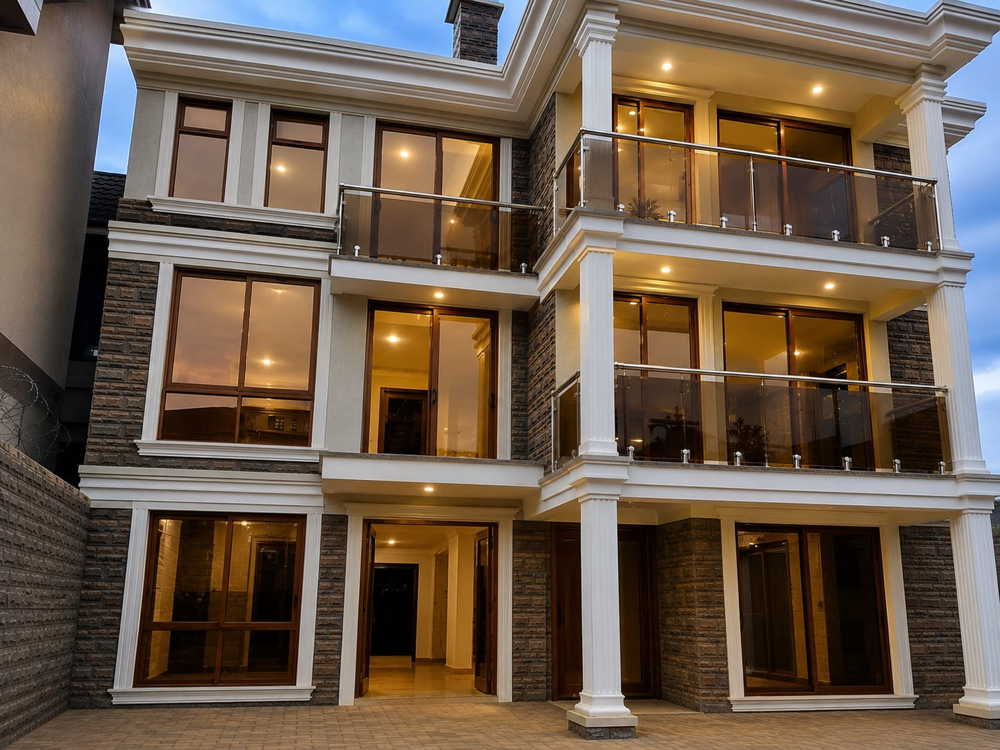
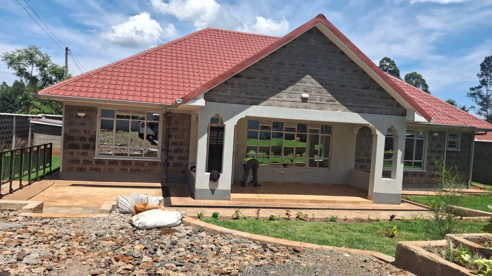

We build
for generations.
Since 1988, Borabu Builders has delivered enduring residential, commercial and infrastructure projects with discipline, craftsmanship and practical expertise.
Built on experience.
Defined by what comes next.
For nearly four decades, Borabu Builders has delivered practical construction and infrastructure solutions across Kenya.
Our reputation is grounded in execution: understanding the work, respecting the details and building for lasting value.

Built to deliver across disciplines.
From buildings to essential infrastructure, one experienced construction partner.
Explore services →Building & Construction
Residential, commercial, institutional and public-service facilities.
Civil & Road Works
Construction, rehabilitation and maintenance for practical site conditions.
Water Infrastructure
Storage, reticulation, treatment and community water systems.
Structural Steel
Fabrication and installation for building and infrastructure requirements.
Borehole Works
Drilling, installation, rehabilitation and maintenance.
Renovation & Rehabilitation
Upgrading, restoring and extending the life of existing structures.

Building more than structures.
We build places that serve people, organizations and communities — with a commitment to quality that lasts beyond handover.
Let's build it well.
Tell us what you are planning and what support you need. Our team can take the conversation from there.